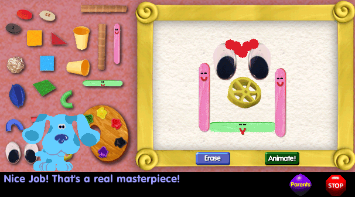
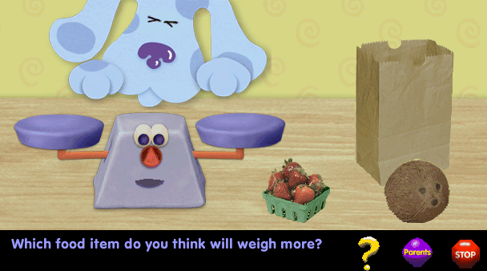
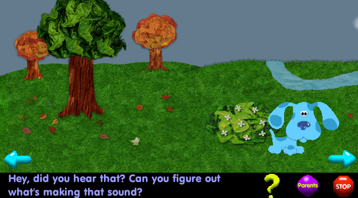
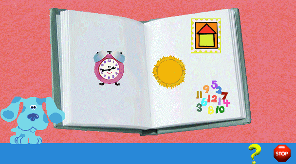
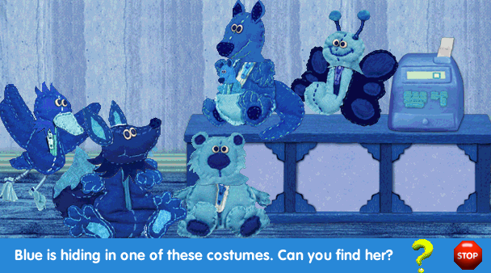
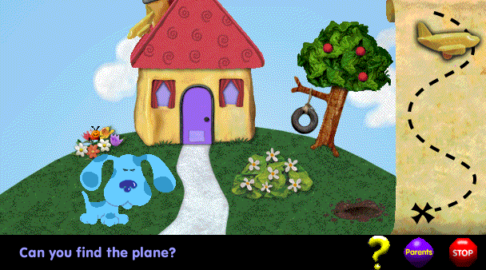
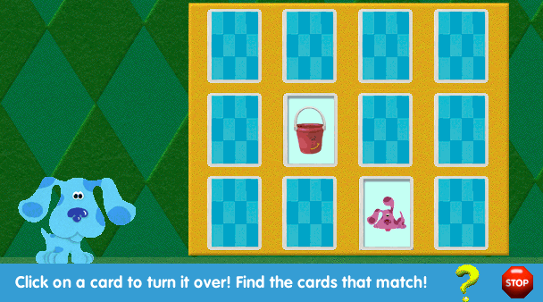
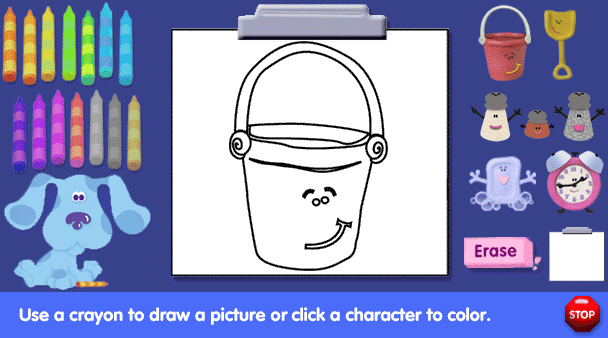
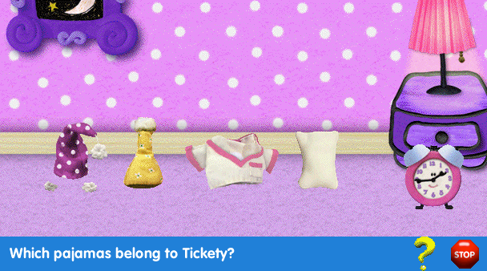
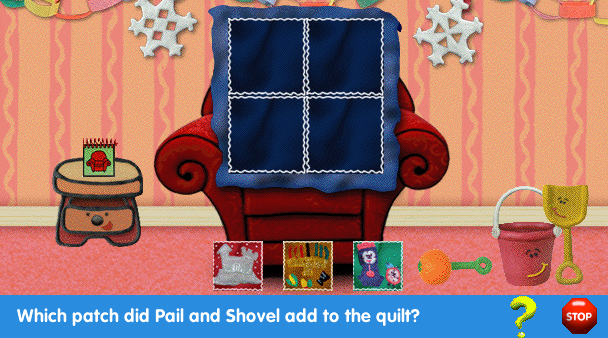

Blue's Clues Downloadable Games
 3/3
3/3

Blue 301 - Art Appreciation!
Blue's playing with the arts and crafts supplies. Will you help her make a work of art?

DOWNLOAD
 .exe file zipped (1.81 MB)
.exe file zipped (1.81 MB)
Blue 302 - Weight and Balance!
Let's weigh things with a balance scale to see what's heavier and lighter.

Note: This is a 16-bit program and requires special programs to run on 64-bit Windows, such as otvdm.
DOWNLOAD
.exe file zipped (1.48 MB)
Blue 304 - What's That Sound?
Did you hear that? Listen and help Blue figure out what's making that sound.

DOWNLOAD
.exe file zipped (2.16 MB)
Blue 306 - Thankful
Blue and Steve are thankful for many things. What are you thankful for?

Note: This is a 16-bit program and requires special programs to run on 64-bit Windows, such as otvdm.
DOWNLOAD
.exe file zipped (1.86 MB)
Blue 307 - Hide-and-Seek!
Play hide-and-seek with Blue and her friends!

Note: This is a 16-bit program and requires special programs to run on 64-bit Windows, such as otvdm.
DOWNLOAD
.exe file zipped (1.70 MB)
Blue 311 - Treasure Hunt!
Help Blue find the hidden treasure?

Note: This is a 16-bit program and requires special programs to run on 64-bit Windows, such as otvdm.
DOWNLOAD
.exe file zipped (2.14 MB)
Blue 312 - Concentration
Steve needs your help matching the pictures.

Note: This is a 16-bit program and requires special programs to run on 64-bit Windows, such as otvdm.
DOWNLOAD
.exe file zipped (1.66 MB)
Blue 313 - Let's Draw!
Color in your favorite Blue's Clues characters!

Note: This is a 16-bit program and requires special programs to run on 64-bit Windows, such as otvdm.
DOWNLOAD
.exe file zipped (1.45 MB)
Blue 319 - Pajama Party!
Blue's having a pajama party and it's time to get ready for bed! Can you help her friends get ready?

Note: This is a 16-bit program and requires special programs to run on 64-bit Windows, such as otvdm.
DOWNLOAD
.exe file zipped (3.18 MB)
Blue 322 - Holiday Quilt
Find out what patches Steve, Blue and their friends added to the Holiday Quilt!

Note: This is a 16-bit program and requires special programs to run on 64-bit Windows, such as otvdm.
DOWNLOAD
.exe file zipped (1.81 MB)